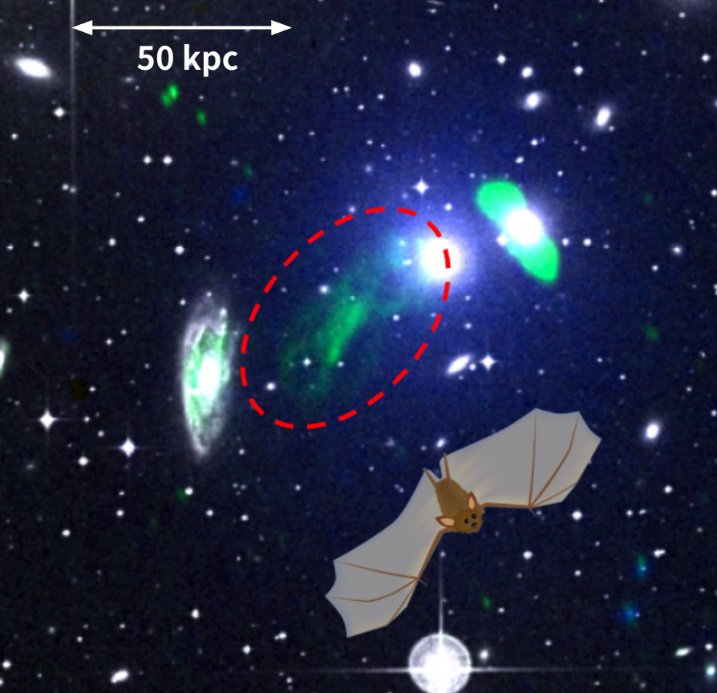
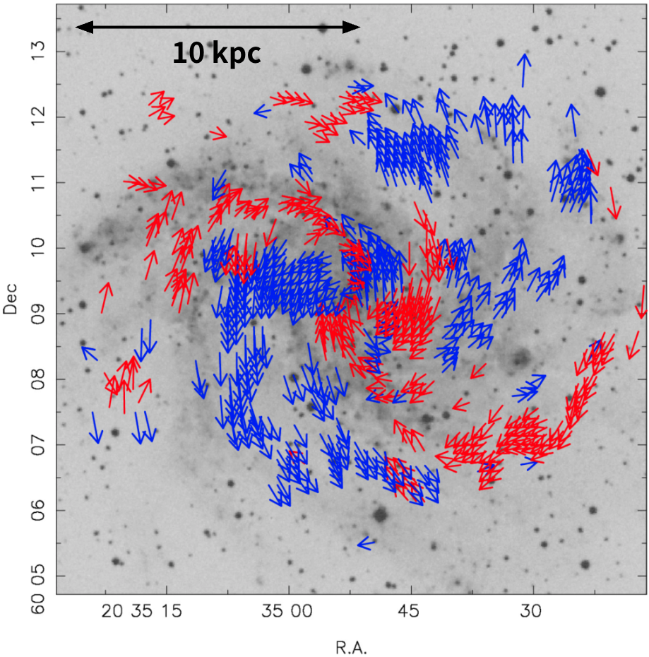
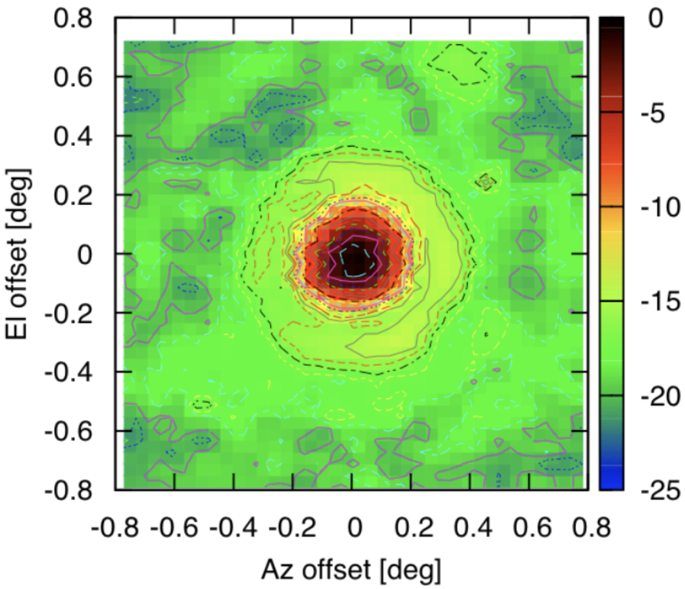

01 / GALAXY CLUSTERS
銀河団の磁場・宇宙線・乱流
銀河団に広がる淡い電波放射や、特異な形をした電波銀河を調べています。電波スペクトルと XRISM による高温ガスの分光を結びつけ、粒子加速やガスの運動を探ります。
Flying Fox の発見論文 （新しいタブ）
磁場と宇宙線がつくる非熱的な宇宙を、
多波長の観測と装置開発から探っています。

01 / GALAXY CLUSTERS
銀河団に広がる淡い電波放射や、特異な形をした電波銀河を調べています。電波スペクトルと XRISM による高温ガスの分光を結びつけ、粒子加速やガスの運動を探ります。
Flying Fox の発見論文 （新しいタブ）
02 / COSMIC MAGNETISM
電波偏波とファラデー回転を使い、近傍銀河の大規模な磁場構造を復元しています。ASKAP の偏波サーベイ POSSUM にも参加し、銀河磁場の理解を広げています。
磁場ベクトル構造の論文 （新しいタブ）
03 / INSTRUMENTATION
臼田 64m アンテナの性能評価、VERA の L-band システムの開発・検証、FPGA 分光計に携わってきました。観測から較正・解析までの経験を、次世代の電波天文学につなげます。
L-band VLBI 開発の発表 （新しいタブ）uGMRT · VLA · ATCA · MeerKAT · ALMA · XRISM